The culture of Uttarakhand shows a distinctive pattern, with the elements from each of the ethnic groups and sub-groups that resides in this place. It can be said that the culture of Uttarakhand is a juncture where the different cultures of the Kumaoni-Garhwal meet. Talking about the culture of Uttarakhand, we can begin with the people of Uttarakhand. Uttarakhand houses seven different ethnic groups, having as many as seven different cultures
People of Uttarakhand:
In this context, it can be said that the people of Uttarakhand are also known as Garhwali or Kumaoni; some of them are also known as :
- Paharis
- Jaunsari
- Bhotia
- Buksha
- Tharu
- Raji
Languages:
Hindi, Kumaoni, Garhwali, Jaunsari, Bhotiya etc.
Religion:
Religion is big business in Uttarakhand, not just because it''s one of the important attractions for domestic tourists, but also because it''s a vital part of daily life for the people of these hills. Large segment of the people in Uttarakhand, especially in the upper reaches, are heterodox Buddhists and Hindus. This is the area which has been known as `Dev Bhoomi''- the land of the gods. Many of Hinduism''s most important shrines lie within Uttarakhand, tucked away in the mountains and along the rivers of the state. Amongst these, the most sacred are the `Char Dham''- the four shrines of Gangotri, Yamunotri, Badrinath and Kedarnath, a pilgrimage of which is supposed to ensure instant salvation. The sacred Ganga, on its foaming path down to the plains, meets its tributaries at what are called the Panch Prayag- the five sacred `sangams'' of the river at Vishnuprayag, Nandprayag, Karnaprayag, Rudraprayag and Devprayag. And that''s not all; Hardwar and Rishikesh are two of Hinduism''s most prominent destinations for pilgrims, while the historical Gurudwara of Hemkund Sahib, near the Valley of Flowers, is an important shrine for Sikh.
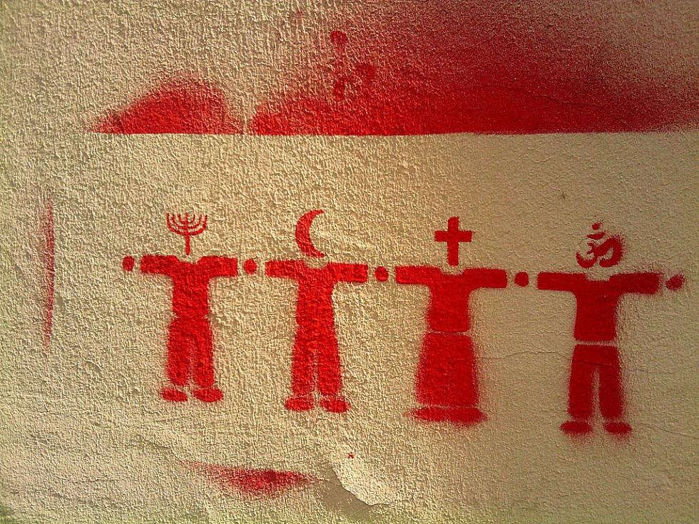
Fairs:
- Devidhura Mela
- Ardh Kumbh Mela
- Nanda Devi Mela
- Kumbh Mela
- Purnagiri Mela
- Gauchar Mela
- And many more
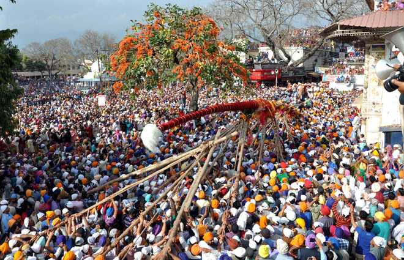
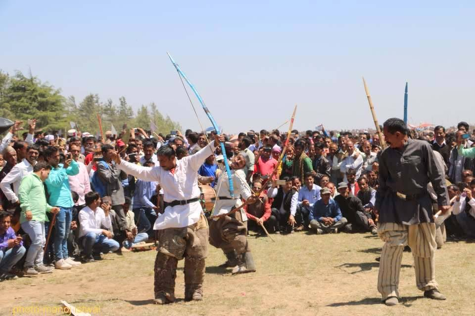
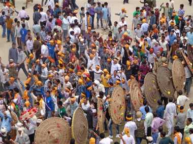
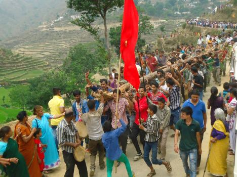
Festivals:
The festivals of Uttarakhand are very colorful and distinctive and are the blend of various social and cultural factors. The love for color and joyous celebrations of the people of Uttarakhand is well reflected by the elaborate rituals and the gay abandon with which they surrender themselves to the numerous festivals of the region. The people of Uttarakhand with much enthusiasm and ebullience celebrate all the major festivals of the nation. The colorful festivals celebrated in the state therefore curb the culture of Uttarakhand out. The festivals of Uttarakhand have contributed to the enrichment of the state.
- Olgia /Ghee Sankranti
- Makar Sankranti
- Ganga Dussehra / Dasara
- Phool Dei
- Hill Jatra
- Bat Savitri
- Janopunya
- Khatarua
- Chhipla jaat
- Kumaon Holi
- Kandali
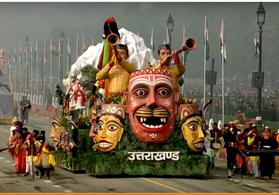
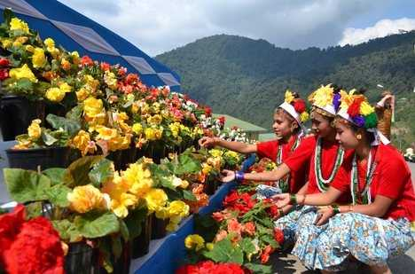
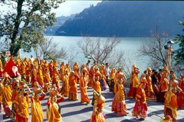
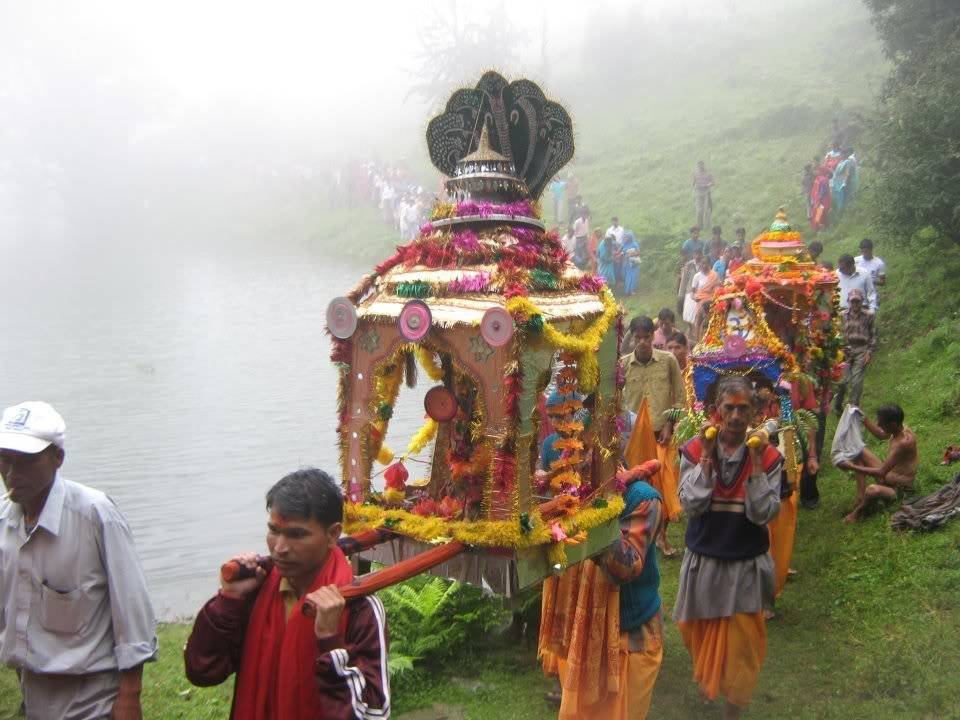
Food:
The beautiful state of Uttarakhand has a very simple, yet delicious cuisine. The food is nutritious as well as tasty. The primary food of Uttarakhand includes vegetables, though non-veg food is also served and savored by many.The primary characteristics of the Uttarakhand cuisine is that milk and milk based products is sparingly used here.Coarse grain with high fibre content is very common in Uttarakhand cuisines.Other food items which are famous are - mundua (Buck wheat) in the interior regions of Kumaun, linguda, which is grown on the borders of Tibet and Nepal.It is also a part of the Pahari cuisine as it helps to keep the stomach in order.Generally, either pure ghee or mustard oil is used for the purpose of cooking food. Use of tomato is minimal in the cuisines of Uttarakhand. Simple recipes of this state are made interesting with the use of hash seeds as spice.Some of the famous cuisines of Uttarakhand include the following:
- Kafuli
- Fannah
- Baadi
- Ras
- Bhatt Ki Churdkani
- Arsa
- Gulgula
- Many more to be tasted
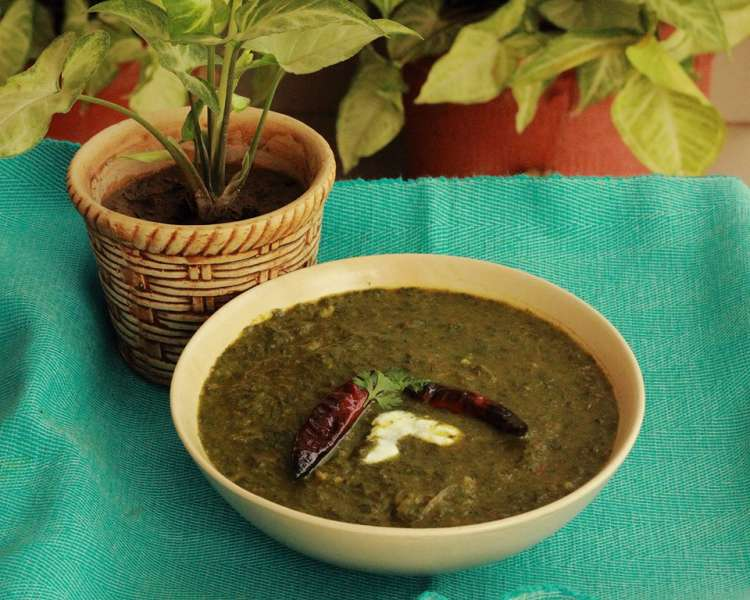
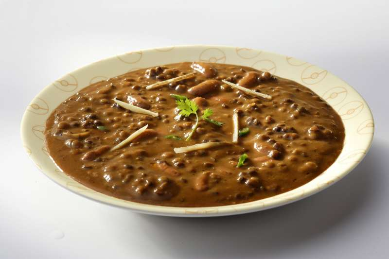
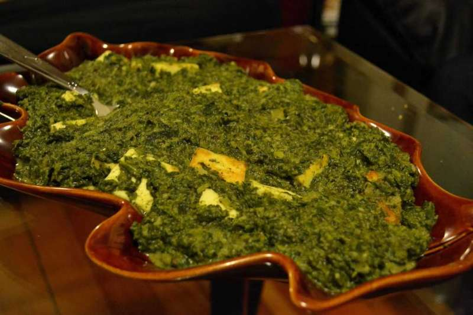
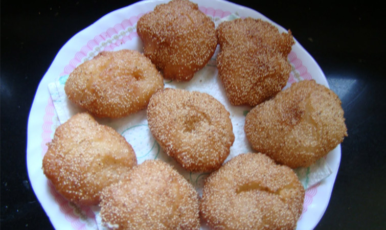
Music and Dance:
Music is an integral part of the Uttarakhand culture. the calm and serene ambiance of this place surrounded with hills and mountains has inspired many musicians to compose great tones. the scintillating glimpse of streams of rivers, lush green forests and the heavenly beauty of the hilly areas are all the natural components of the folk music over here. they mainly include the spiritual and socio-cultural scenes of the place. some of the popular folk songs are `Mandals`, `panwaras` and somber `khuded`, `thadya` and `jhoda`.these folk songs are composed on the beats and nodes of Dhol, damoun, turri, ransingha, dholki, daur, thali, bhankora and masakbhaja.Although with the upcoming advancement in science and technology, the music in uttarakhand has also gained a lot of changes over the years.
many musical legends are associated with this place.meena rana who has released multiple albums in her voice is also known as "Lata Mangeshkar of Uttarakhand". langvir nritya is a dance form for males and in many ways similar to gymnastic movements. Barada Nati folk dance is another famous dance of Dehradun, which is practiced on some religious festivals.
Music:
Chhopati, Chounphula, Jhumeila, Basanti, Mangal, Puja Folk Songs etc.
Dance:
Langvir Nritya, Barada Nati, Pandav Nritya etc
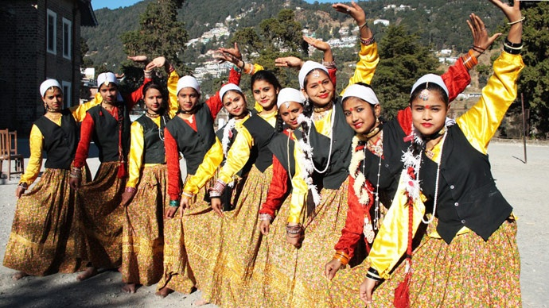
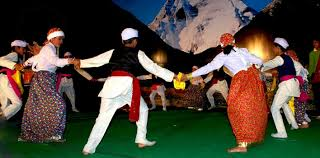
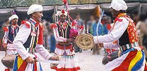
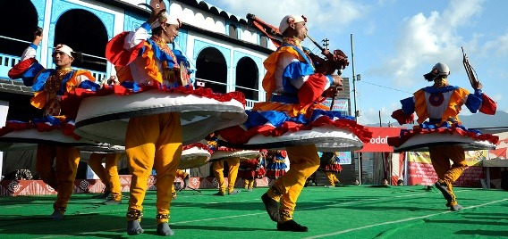